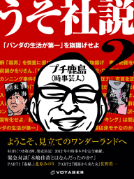
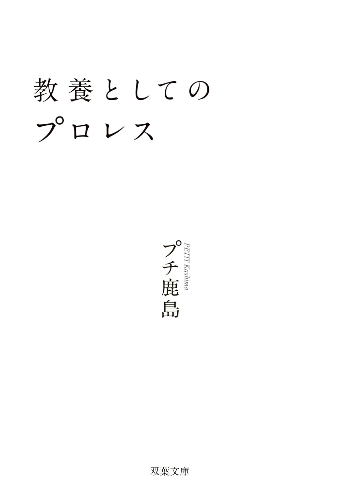
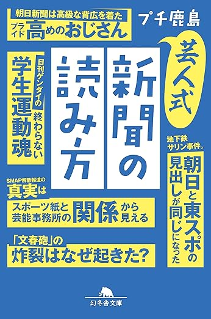
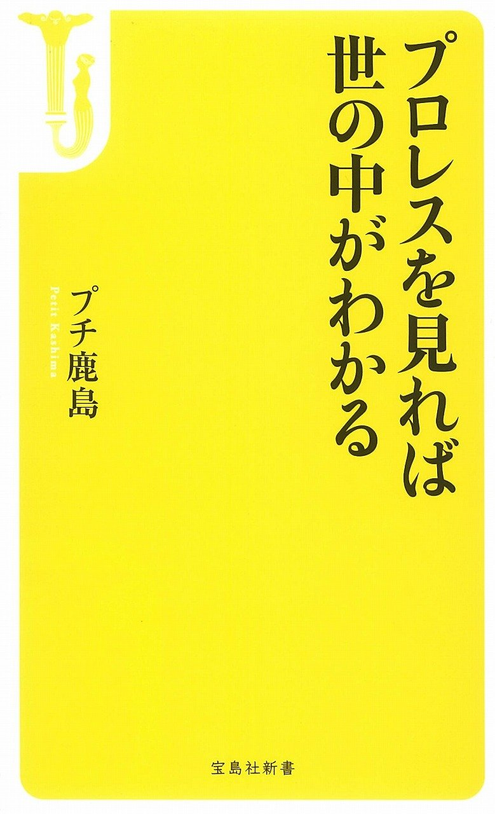
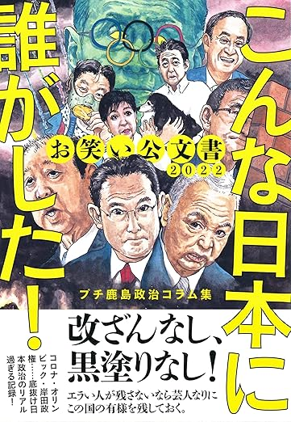
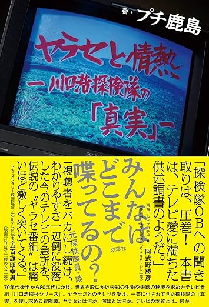
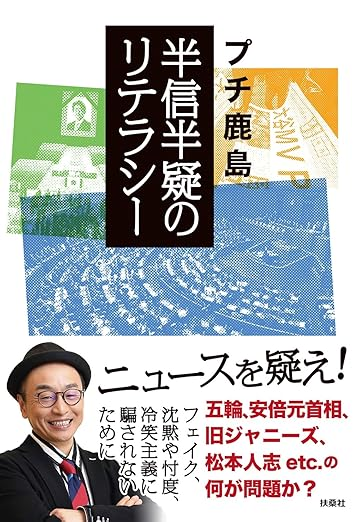
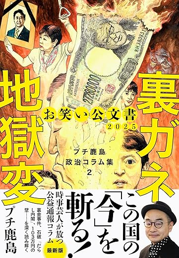
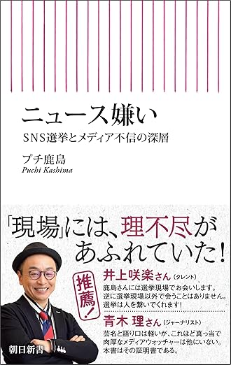

MAR
15
2025
NEXT
芸歴25周年記念独演会
芸歴25周年記念独演会
「新聞、全部読んだ」
渋谷ヒカリエホール B7F
開場 18:00 / 開演 19:00
SPECIAL EDITION
読み込み中...
1970年生まれ、長野県千曲市出身。大学卒業後に上京し、大川興業をはじめ複数の事務所を経て現在のスタイルを確立。毎朝14紙の新聞を読み比べ、政治・経済・社会から芸能・スポーツまで縦横無尽に斬り込む「時事芸人」として知られる。
ラジオ・テレビへの出演多数。TBSラジオ『東京ポッド許可局』（マキタスポーツ、サンキュータツオとのレギュラー番組）をはじめ、YBSラジオ・BS11等に出演。2019年にはニュース時事能力検定1級に合格。
2021年より朝日新聞デジタルコメントプラスのコメンテーターを務める。2023年には選挙ドキュメンタリー映画『劇場版センキョナンデス』『シン・ちむどんどん』を監督・主演。映画監督としても精力的に活動している。
毎朝の読み比べ紙数
ニュース時事能力検定
芸歴









本名：鹿島智広。幼少期から新聞やテレビのニュースに親しみ、時事への関心が自然と芽生えていった。
友人と組んだラップグループでコンテストに優勝し、CDを発売。卒業後は尊敬する高田文夫のラジオを聴くため上京する。
大川興業をはじめ複数の事務所を経ながら、全紙比較による時事漫談というスタイルを磨き上げる。
マキタスポーツ、サンキュータツオとともにレギュラー番組を開始。「文系芸人」として幅広いリスナーから支持を集める。
「時事芸人」として長年培ってきた知識を実証。この資格取得が大きな話題となり、メディア露出がさらに増加した。
デジタルメディアにも活動の場を広げ、毎月17本ものコラム連載を維持。10代向けの「読売中高生新聞」など幅広い世代向けにも執筆。
ダースレイダーとともに「劇場版センキョナンデス」「シン・ちむどんどん」を監督・主演。コラムニスト・映画監督としても活躍中。
NOW講演依頼・メディア出演・取材等は所属事務所までお気軽にどうぞ。
ワタナベエンターテインメント※ 個人への直接のご連絡はご遠慮ください。